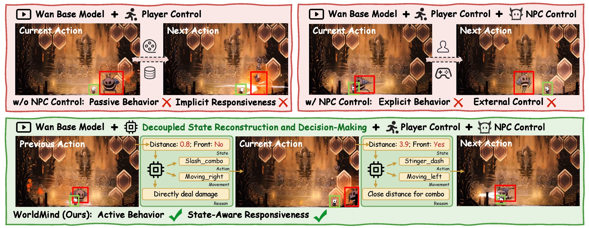
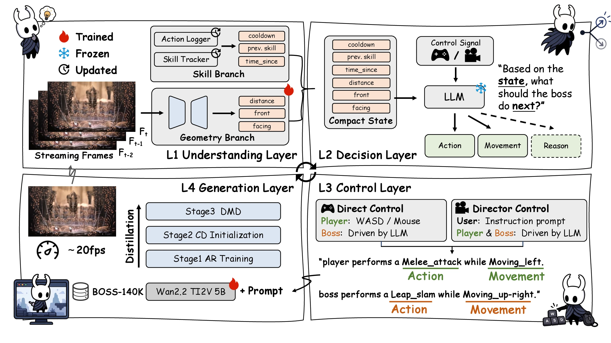
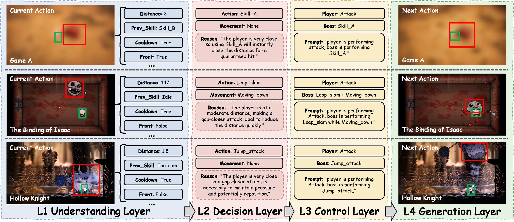
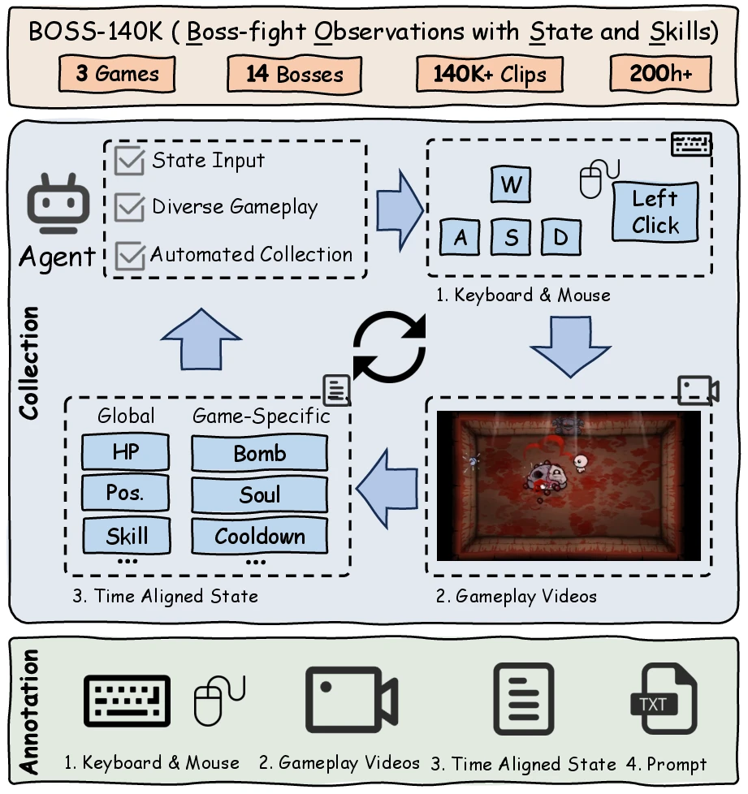

You play. WorldMind runs the boss.
Keyboard and mouse events become symbolic player actions, while L2 chooses the boss response from the current compact state.
PLAYER: move left + dodge
BOSS: approach + heavy slash
arXiv preprint · 2026
1Tencent 2National University of Singapore
WorldMind decouples compact-state construction, NPC decision-making, action control, and video generation—then reconnects them in a closed loop.
Construct the state. Plan the response. Render the outcome. Repeat.
01 / Paper summary
Game world models have recently demonstrated promising capabilities in generating visually coherent and action-controllable gameplay videos. However, non-player character (NPC) behavior in existing models is either implicitly entangled with video generation or explicitly prescribed through external control signals. Consequently, a game world model has to jointly understand the state, plan the NPC's response and render its visual outcome, limiting its ability to produce responsive and state-aware NPC behavior. The challenge lies in the lack of an explicit interface for state-grounded decision-making. To this end, we introduce WorldMind, to our knowledge the first decoupled framework for state-aware NPC behavior in game world models. WorldMind separates interactive world modeling into four layers: an Understanding Layer that constructs a compact state from generated frames; a Decision Layer that reasons over the compact state to plan the NPC's next action; a Control Layer that translates the actions into temporally aligned conditions; and a Generation Layer that synthesizes their visual outcomes. By reconnecting layers in a closed interaction loop, WorldMind grounds NPC behavior in the evolving game state. We further introduce BOSS-140K, a dataset of gameplay videos paired with rich internal game states, together with an agent that automates the collection at scale. Experiments on BOSS-140K demonstrate reliable compact state reconstruction and mechanics-grounded planning, with WorldMind preferred over the baselines in approximately 70% of pairwise comparisons for its more tactically appropriate and coherent NPC behavior.
02 / System at a glance
Plausible frames are not enough.
A boss can look convincing while choosing the wrong move. Existing game world models either bury NPC behavior inside video prediction or ask an external controller to prescribe it; WorldMind reconstructs the current state, decides the boss action, turns it into a control condition, and renders the next segment.

Open full figure ↗Implicit behavior
The model must jointly infer the current state, reason about the NPC action, and render its visual outcome.
External control
The world model renders a supplied boss action without deciding whether it fits the evolving state.
WorldMind
A compact state drives the boss decision before the visual consequence is synthesized.
03 / Four-layer closed loop
One interaction. Four distinct responsibilities.
WorldMind separates state understanding, decision-making, action control, and video generation, then feeds the rendered result back into the loop.
Constructs a compact state from generated frames and issued boss-action history, combining a learned geometry branch with a deterministic skill branch.
A general-purpose language model reasons over the compact state, the full skill set, and cooldown information to form a short-horizon plan.
Converts player and boss actions into temporally aligned natural-language conditions consumed by the video generator.
Renders the selected actions with a Wan 2.2 TI2V-5B generator distilled through causal AR training, consistency initialization, and asymmetric DMD.
Then the rendered frames return to L1. The boss can react again as the interaction evolves.

Open full figure ↗Direct control
Keyboard and mouse events become symbolic player actions, while L2 chooses the boss response from the current compact state.
PLAYER: move left + dodge
BOSS: approach + heavy slash
Director control
A natural-language instruction guides both entities while the state-aware decision process remains inside the loop.
“The player keeps evading while
the boss remains highly aggressive.”
04 / Across three games
One decision, end to end.
Across Game A, The Binding of Isaac, and Hollow Knight, the same L1 → L2 → L3 → L4 contract turns visual history into a state-aware action and then into the next generated segment.

Open full figure ↗05 / System and interfaces
The full system wins under both judges.
We compare the assembled closed-loop system against the implicit and explicit baselines under matched starts, the same backbone, and the same training corpus.
Full system
preferred over implicit NPC behavior
preferred over explicit NPC control
| System | Action validity ↑ | Sequence fit ↑ |
|---|---|---|
| WorldMind | 74.0% | 3.85 / 5 |
| Wan w/o NPC control | 63.6% | 3.28 / 5 |
| Wan w/ NPC control | 63.6% | 3.22 / 5 |
One-minute Game A rollouts: 86 matched starts per system, 12 generated segments per rollout, and three independent judge passes. All systems use the same Wan 2.2 backbone and training corpus; the implicit baseline is player-only, while the explicit baseline and WorldMind are boss-conditioned.
06 / Training data
BOSS-140K aligns pixels, controls, skills, and state on one timeline.
Boss-fight Observations with States and Skills provides aligned data for training and evaluating the loop; L2 remains an untuned general-purpose language model.
A state-conditioned gameplay agent interacts with each boss while the collection pipeline records gameplay video, player controls, boss skills, animation states, internal variables, and captions in alignment. Engine access is used only for data collection—not at WorldMind inference time.

Open full figure ↗07 / Citation
Cite the preprint.
The preprint is available above. Code and data will be released; one of the three titles is referred to as Game A and its frames are blurred.
@article{deng2026worldmind,
title = {WorldMind: Decoupled Game World Model for State-Aware NPC Behavior},
author = {Deng, Zhiyang and Zhang, Boran and Chen, Danze and Jin, Yeying},
journal = {arXiv preprint},
year = {2026}
}